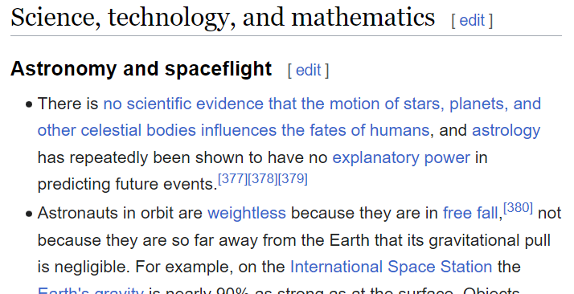

The psychological roots of the rejection (and acceptance) of science
Matthew Andreotta
Postdoctoral Fellow at CSIRO
26 May 2023
Blog: matt-lab.github.io
Twitter: @MattAndreotta
LinkedIn: @matthew-andreotta
What is anti-science?
Anti-science are a relatively-enduring claims of an event, object, process, person, or group of people that is inconsistent with scientific consensus or methods
- Not necessarily a rejection of all science
- Not all anti-science attitudes are equally harmful
Harmless anti-science?
Wikipedia’s List of Common Misconceptions

Harmful anti-science?
Sign from Freedom Rally, Melbourne, 2021

- Despite their diversity, anti-science attitudes may be underpinned by common psychology
Anti-science claims
- Public encounter science through the simplified claims of science, not multi-page papers
- E.g., headlines, social media posts
- Anti-science claims can be difficult to verify (truth is not always clear)
- Anti-science claims may be imbued with an unfalsifiable claim or demand
- Which of the following signs from Melbourne’s 2021 Freedom Rally have anti-science claims?


Anti-science claims about climate change

References
Hornsey, M. J. (2020). Why Facts Are Not Enough: Understanding and Managing the Motivated Rejection of Science. Current Directions in Psychological Science, 29(6), 583–591. https://doi.org/10.1177/0963721420969364